The Journey
The Fall of Shiganshina
The Colossal Titan breaches the wall, and humanity's fragile peace shatters - beginning a desperate fight for survival.
The Return to Shiganshina
Eren and the Survey Corps reclaim their home, only to uncover truths that reshape everything they believed.
The Marley Arc
The story shifts beyond the walls,revealing a wider world of politics,prejudice, and a war with no clear villain.
The Rumbling
Freedom or Annihilation - the final saga forces every character toward an irreversible reckoning.
The Seasons
Tap a season to reveal what's waiting inside.
Iconic Characters
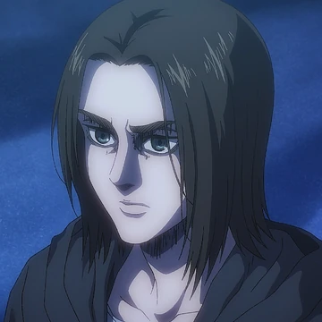
Eren Yeager
Founding Titan
"If people knew it would come to this,nobody would go to war.But most people are pushed by something,forced to march into hell.That 'something' wasn't their choice.Their situatuion or others made them do it.But people who push their own backs see a different kind of hell.They can see something beyond hell.It might be hope.It may even be another hell.Only those who keep moving forrward will ever know. I will keep moving forward... until i have killed all my enemies."
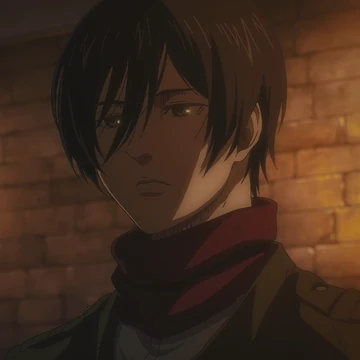
Mikasa Ackerman
Survey Corps
"The world is cruel, but also very beautiful. There's only so many lives that I actually care about.My enemies made deciding that easy years ago.So...you're mistaken to seek any compassion from me.Because right now,I'm all out of time and room in my heart to care."
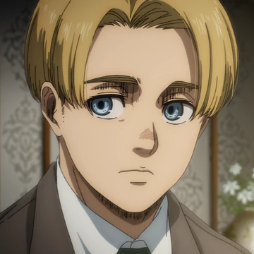
Armin Arlert
Colossal Titan
"I don't want to die... I want to see it. What's out there in the world. We'll suffer for the sin of killing 80% of the humanity.Together"
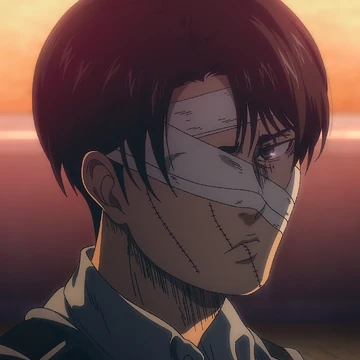
Levi Ackerman
Captain, Survey Corps
"The only ones who should kill are those prepared to be killed. I don't know the answer to that.I never have.Whether i trusted myself or the choices of my dependable comrades,there was no telling how things would turn out.So, just do the best you can and chooses whichever you'll regret the least."
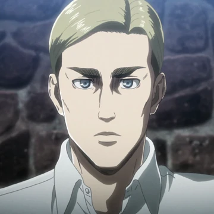
Erwin Smith
Commander, Survey Corps
"Soldiers, devote your hearts. Everything i've done until now... was because I thought this day would come. That someday, I could check if I was right.So many times... I thought death would be much easier.But always, the dream i shared with my father flashed through my mind. And now, I'm close to the answers to reach out and grab them."
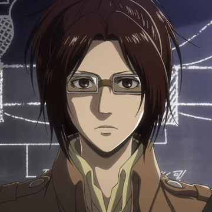
Hange Zoë
14th Commander
"Titans are fascinating, magnificent creatures. Do you know why we the Scouts have shed so much blood?! To take back our freedom from the Titans! I was willing to sacrifice my own life for that cause."
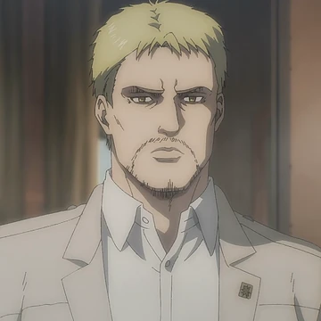
Reiner Braun
Armored Titan
"I'm the one who did it. I'm the Armored Titan. I wanted to be a hero! I wanted peoples's respect! It's my fault! Your mom was eaten by a titan because of me! I'm sick of this... of myself! just Kill me,Eren."
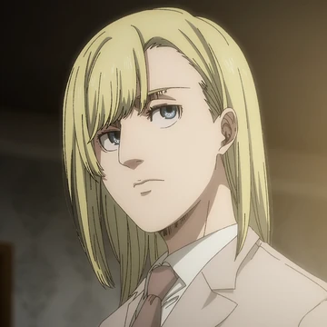
Annie Leonhart
Female Titan
"I just... wanted to go home. I'm done thinking that nothing matters to me,I'm fully aware that I've commited irredeemable sins.But, If it's for returning to my father... I WON'T HESITATE TO REPEAT WHAT I DID>"
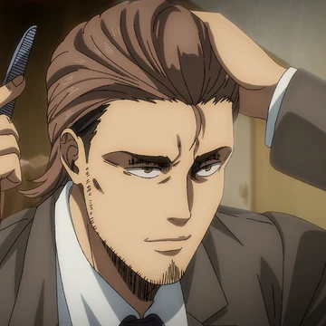
Jean Kirschtein
Survey Corps
"Whether we die trying, or die running — we die either way. If I hadn't become a soldier, I never would've had to worry about who's next.... I know I have to fight. But not everyone can be a suicidal maniac like you,Eren."
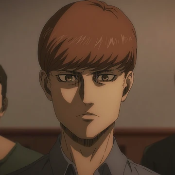
Floch Forster
Yeagerist
"Someone has to be the bad guy. Look there.Eren's telling us something, that we have to fight. We can't just cower behind our walls, waiting for death to come. We need to fight like he does, like devils."
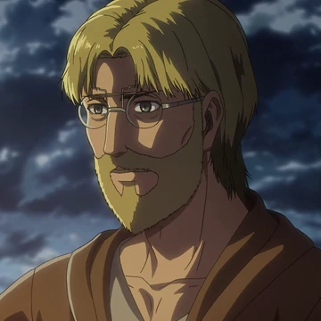
Zeke Yeager
Beast Titan
"Let's build a world without Titans... together. What's more, if we hadn't been born, We wouldn't have had to suffer!"
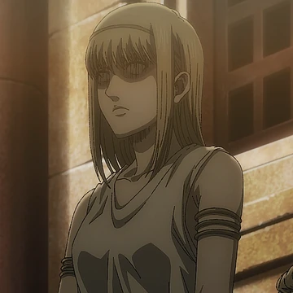
Ymir Fritz
First Founding Titan
Over 2000 years ago, she gained the power of the Titans and was forced into slavery by the ancient Eldian King Fritz.After her death, her soul was trappined in the "Paths", where she continued to build titans from clay for her descendants.